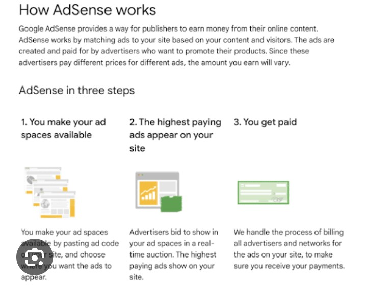
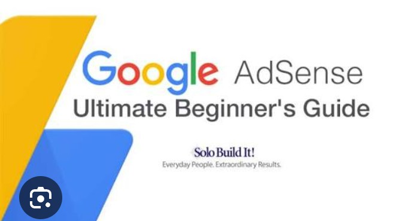
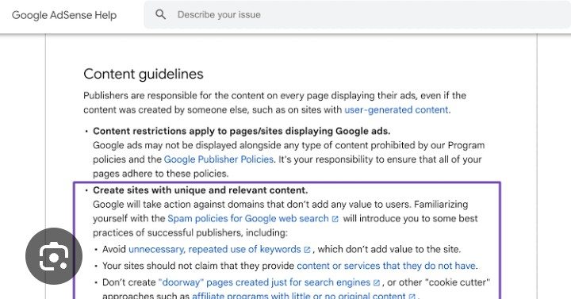

Google AdSense is one of the world's most popular advertising programs for website owners, bloggers, and content creators. It allows publishers to earn money by displaying relevant advertisements on their websites. Whenever visitors view or click on these advertisements, the website owner may earn revenue depending on the advertiser's bidding and other factors.
For beginners, AdSense provides a simple way to monetize quality content without creating products or offering paid services. After your website is approved, Google automatically displays advertisements that match your visitors' interests, making the advertising experience more useful for both users and advertisers.
Google AdSense is an advertising network developed by Google that connects advertisers with website owners. Advertisers pay Google to display their advertisements across millions of websites, while publishers receive a share of the advertising revenue generated from their sites.
The entire advertising process is automated. Website owners simply place an AdSense code on their pages, and Google's system selects the most relevant advertisements based on the content of the page and visitor behavior.
After your website is approved, Google provides a small JavaScript code that you place where advertisements should appear. Whenever a visitor opens your page, Google's servers analyze the content and display advertisements that are most relevant to that visitor.
Revenue depends on several factors, including advertiser demand, website niche, visitor location, traffic quality, and user engagement. Some topics such as finance, technology, education, and business generally attract higher advertising rates than others.
Because Google manages advertiser relationships, publishers can focus on creating valuable content while the advertising system works automatically in the background.
Anyone with a high-quality website that follows Google's policies can apply for AdSense. Websites should contain original content, easy navigation, essential pages, and a positive user experience. Educational websites, blogs, portfolios, news websites, tutorials, and many other content-based websites are eligible if they comply with Google's guidelines.
These requirements help demonstrate that your website provides a trustworthy experience for visitors and advertisers.
Content quality is the foundation of AdSense approval. Articles should be original, informative, and written for real users rather than search engines alone. Avoid copying material from other websites because duplicate content can lead to rejection.
Publishing useful tutorials, guides, reviews, educational articles, and detailed explanations helps build authority and encourages visitors to spend more time on your website.
A clean, professional design creates a better first impression and improves user experience. Visitors should easily find menus, categories, and important pages without confusion. Excessive pop-ups, broken links, or cluttered layouts may negatively affect both users and AdSense review.
Google AdSense rewards websites that prioritize quality, usefulness, and trust. Before applying, focus on building valuable content, improving website performance, and creating a professional browsing experience. A strong foundation greatly increases your chances of receiving AdSense approval.
Following Google's policies is essential for getting and keeping AdSense approval. Google only approves websites that provide original, valuable, and user-friendly content. Publishers should never copy articles from other websites, generate spam content, or publish misleading information. Every page should offer real value to visitors and maintain a professional appearance.

Before applying for AdSense, make sure your website includes important pages that increase trust and transparency. These pages help both visitors and Google understand your website better.
A website without these essential pages often appears incomplete and may reduce the chances of AdSense approval.
Many beginners receive AdSense rejection because their websites are not fully prepared. The most common reasons include thin content, copied articles, poor navigation, broken links, low-quality design, policy violations, and insufficient original pages.
Instead of applying immediately after creating a website, spend time improving content quality, adding useful articles, and ensuring every page works correctly.

Although Google does not specify a minimum traffic requirement, having regular visitors demonstrates that your website is active and useful. Focus on creating high-quality content and improving SEO instead of trying to generate fake traffic.
Google Analytics helps you understand how visitors interact with your website. You can monitor page views, user locations, session duration, bounce rate, and traffic sources. These insights allow you to improve your content and increase website performance.
Preparing your website carefully before applying for AdSense significantly improves your approval chances. Focus on quality, user experience, originality, and policy compliance rather than rushing the application process.
Getting AdSense approval is only the first step. To increase your earnings, focus on growing your website with valuable content and attracting genuine visitors. High-quality articles that answer users' questions are more likely to rank in search engines and receive consistent traffic over time.
Publish content regularly and update older articles with fresh information. Search engines prefer websites that remain active and provide accurate, up-to-date content.
Advertisements should be placed where they are easy to notice but do not interrupt the reading experience. Too many ads can make a website look unprofessional and may reduce visitor satisfaction.
Many publishers lose their AdSense accounts because they violate Google's policies. Avoid clicking your own ads, asking friends to click ads, buying fake traffic, copying content, or using misleading titles. These activities may result in account suspension or permanent termination.
Regularly check your AdSense reports and website analytics to understand which pages perform best. Analyze page views, click-through rate (CTR), user engagement, and traffic sources. These insights help you improve content and increase long-term revenue.
Search Engine Optimization (SEO) plays a major role in AdSense success. Websites that rank higher on Google receive more organic visitors, leading to more ad impressions and potential earnings. Use descriptive headings, optimize images, improve page speed, and write informative articles targeting relevant keywords.

Google AdSense is an excellent way to monetize a high-quality website, but success depends on more than simply placing advertisements. Focus on creating valuable content, improving user experience, following Google's policies, and growing your organic traffic through SEO. With patience, consistency, and continuous improvement, your website can become a reliable source of long-term income while providing genuine value to your audience.